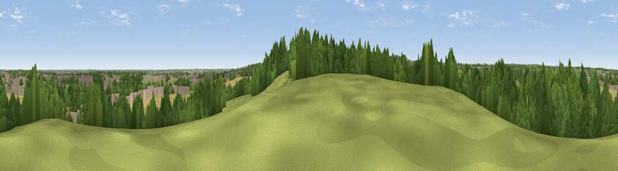

Viewpoint near Loversall
#37052 in England · top 67% of its area beats it · near Loversall · path 256 mWhere it is
The exact computed spot (SK 55325 99325). Click the marker for map links.
Public access: the nearest public right of way is about 256 m away — the final stretch may cross private land. Computed from Natural England's CRoW access layer and OpenStreetMap rights of way — not the legal definitive map. Always verify locally.
The view, rendered

A 360° render of this exact spot computed from the terrain model, tree cover and land cover — summer colours, afternoon light, calibrated against photographs of famous viewpoints. Real trees, hedges and buildings will differ in detail.
The panorama
Grey silhouette: terrain skyline in each direction (720 bearings, Earth curvature and refraction included). Dashed green: skyline with trees (+15 m) and buildings (+8 m) as obstacles. Blue strip: how far the ground is visible on each bearing.
Where the view opens
Wedge length = distance to the farthest visible ground on that bearing (vegetation-aware). Rings at 10, 25 and 50 km.
What fills the view
39% woodland · 22% grassland · 21% cropland · 18% built-up
Angular shares of the visible panorama (visual magnitude), not map area. Landscape diversity 0.58 (0–1 Shannon).
Key numbers
More beautiful places nearby
The staircase of upgrades: each row has a higher view potential than everything closer. Driving times are estimates from straight-line distance, calibrated against real road routing — check an actual route before setting out.
| Place | Direction | Drive | Score |
|---|---|---|---|
| Viewpoint near Loversall | S · 0 km | ~1 min | 34.4 |
| Viewpoint near Cadeby | W · 4 km | ~9 min | 40.5 |
| Viewpoint near Cadeby | WNW · 5 km | ~10 min | 55.8 |
| Viewpoint near High Melton | WNW · 6 km | ~13 min | 58.5 |
| Viewpoint near Maltby | S · 7 km | ~14 min | 70.7 |
| Viewpoint near Whitley | W · 23 km | ~38 min | 72.1 |
| Viewpoint near Wharncliffe Side | W · 24 km | ~39 min | 75.2 |
| Viewpoint near Greenfield | W · 55 km | ~77 min | 76.0 |
53.48774, -1.16767 · source: screening · position refined by local search. Computed location — check access rights before visiting.